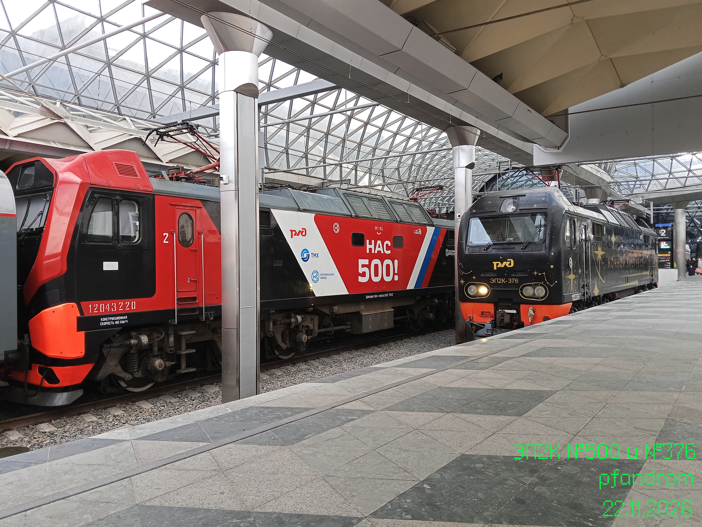
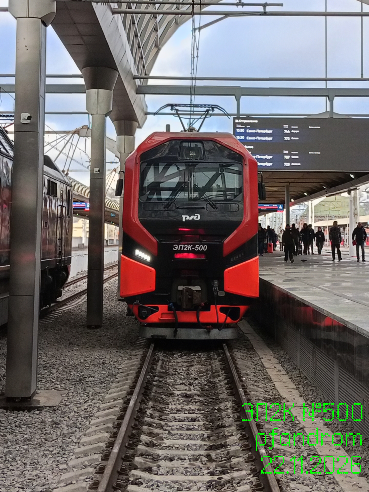
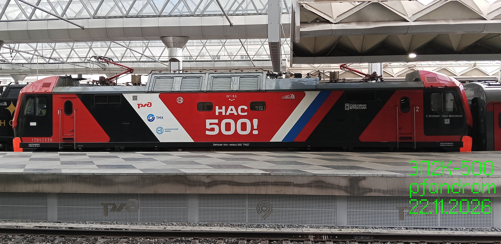

ЭП2К-500
ЭП2К-500 — юбилейный, 500-й по счёту магистральный пассажирский электровоз постоянного тока, построенный в сентябре 2024 года на Коломенском заводе (входит в Трансмашхолдинг). Машина открыла новую веху в истории серии, получив обновленный кузов в фирменном стиле бренда «ДНК».
Электровоз оборудован системой энергоснабжения вагонов поезда. Конструкционная скорость — 160 км/ч.
❤️ Этот локомотив — любимый у владельца сайта!
Общая информация
| Параметр | Значение |
|---|---|
| Завод-изготовитель | Коломенский завод |
| Заводской № | 3862 |
| Построен | 09.2024 |
| Дорога приписки | Октябрьская железная дорога |
| Депо | ТЧЭ-8 Санкт-Петербург-Пассажирский-Московский |
| Текущее состояние | Эксплуатируется |
| Тематическое брендирование | 🟥⬛🟦 «НАС 500!» |
Уникальный дизайн
Основное визуальное и конструктивное отличие ЭП2К-500 от предыдущих 499 машин — новая пластиковая маска кабины машиниста, выполненная по единой дизайн-концепции ТМХ («ДНК бренда»).
Новая маска
Кабина получила новые диагональные угловые обводы, а прежние округлые буферные фонари заменили на узкие диагональные светодиодные блоки. Верхний прожектор получил трапециевидную форму и был утоплен в обвод крыши.
Влияние на серию
Начиная с ЭП2К-500 (и далее с 501-го номера, за исключением ЭП2К-505), все новые электровозы серии сходят с конвейера с измененной лобовой маской. Последующие машины получили голубо-серо-белую ливрею для «Авроры».
Эксклюзивная юбилейная ливрея
В отличие от стандартной корпоративной красно-серой раскраски РЖД, ЭП2К-500 получил уникальную черно-красную схему. Эскиз разработал победитель открытого конкурса дизайна среди любителей железных дорог.
- Красный: крыша кабины, боковые обводы, боковые стены в средней части и в зоне дверей.
- Чёрный: лобовая часть кабины, диагональные панели буферных фонарей, зона боковых окон, две диагональные полосы за дверями и нижняя горизонтальная полоса сбоку.
- Оранжевый: панели под буферными фонарями и основная верхняя путеочистителя.
- Серый: низ путеочистителя и основная крыша.
Между чёрными диагональными полосами и центральной красной частью на бортах со стороны левой кабины была нанесена белая диагональная полоса с логотипами РЖД, ТМХ и Коломенского завода, а справа — белая, синяя и красная полосы в цветах российского флага. В центре боковых стен нанесена юбилейная надпись «НАС 500!».
Устройство и технические характеристики
Тяговый привод
Установлены шесть коллекторных тяговых электродвигателей ЭД-153 с опорно-рамным подвешиванием и передачей крутящего момента через полый вал и упругую муфту. Это снижает неподрессоренные массы и бережет путь на высоких скоростях.
Силовая схема
Регулирование напряжения на двигателях — реостатно-контакторное (ступенчатое, с перегруппировкой соединений). Предусмотрен электрический (реостатный) тормоз с рассеиванием энергии на резисторах с принудительным обдувом.
Энергоснабжение поезда
Электровоз оснащен высоковольтной магистралью отопления (3000 В) для питания систем климат-контроля и кипятильников пассажирских вагонов, включая современные двухэтажные составы.
Рабочее место бригады
Кабина оборудована эргономичным пультом с цветными дисплеями МПСУ. Лобовые и боковые стекла имеют электрообогрев; установлены кондиционер, система автоведения и комплекс приборов безопасности (КЛУБ-У, САУТ-ЦМ/485, ТСКБМ).
| Основные параметры | |
|---|---|
| Заводской тип / Серия | ЭП2К (Электровоз Пассажирский, тип 2, Коллекторный) |
| Род тока и напряжение | Постоянный ток, 3 000 В (3 кВ) |
| Осевая формула | 3₀ - 3₀ (две трехосные бесчелюстные тележки) |
| Длина по осям автосцепок | 21 800 мм |
| Ширина / Высота кузова | 3 100 мм / 5 100 мм |
| Служебная масса | 135 т |
| Нагрузка от оси на рельсы | 22,5 тс |
| Часовая мощность | 4 800 кВт (6 × 800 кВт) |
| Сила тяги при трогании | 302 кН |
| Сила тяги длительного режима | 167,4 кН |
| Конструкционная скорость | 160 км/ч |
| Мин. радиус кривых | 125 м |
| Рабочие температуры | от −50 °C до +50 °C |
История и эксплуатация
Торжественная передача
На площадке Коломенского завода прошла церемония передачи акта приемки представителям РЖД. Событие приурочили к 155-летию коломенского локомотивостроения и Дню машиностроителя.
Начало работы
Локомотив закреплен за депо ТЧЭ-8 Санкт-Петербург-Пассажирский-Московский. Главный полигон работы — скоростной ход Санкт-Петербург — Москва, а также направления на Мурманск, Волховстрой и Свирь.
Суммарный пробег серии: Электровозы ЭП2К несут службу на Западно-Сибирской, Октябрьской, Московской и Куйбышевской железных дорогах. Суммарный эксплуатационный пробег всех коломенских ЭП2К составляет уже более 780 миллионов километров (более чем в 5 раз превышает расстояние от Земли до Солнца).
Фотогалерея


📌 Москва, Ленинградский вокзал.
Готовится уехать в депо.

📌 Москва, Ленинградский вокзал.
Вид спереди.

📌 Москва, Ленинградский вокзал.
Вид сбоку.

📌 Москва, ПТОЛ Киевского вокзала.
Юбилейный электровоз «Нас 500!» в компании ЧС7-144 и ЧС7-285.
Нажмите на фото для увеличения
«ЭП2К-500 — юбилейный локомотив, открывший новую главу в истории серии. Он стал первым в новом дизайне и первым, кто повёл обновлённую „Аврору“. Суммарный пробег всей серии — более 780 млн км, что в пять раз больше расстояния от Земли до Солнца».